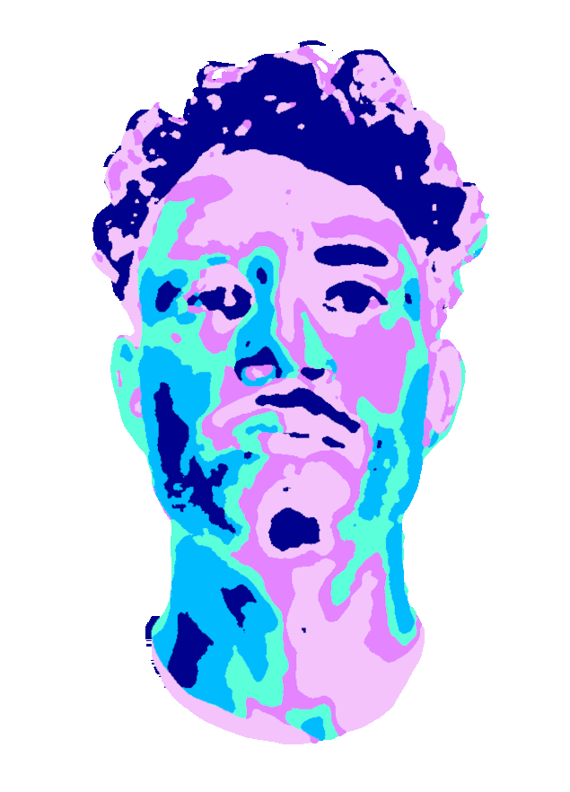

ABOUT ME

patrick
Hey. My name’s Patrick!
I graduated from UMBC with a BS in CS where I was introduced to image processing, games, and ML. Basically, I've taken interest in anything visual and love learning about the methods behind them. I'm actively seeking an internship or entry-level position in a role that encourages the exploration of tech and art. Here are some things I’ve made!
I graduated from UMBC with a BS in CS where I was introduced to image processing, games, and ML. Basically, I've taken interest in anything visual and love learning about the methods behind them. I'm actively seeking an internship or entry-level position in a role that encourages the exploration of tech and art. Here are some things I’ve made!
PROJECTS
stabilize
renderering
ue4
pixel sort
seam carve
blender